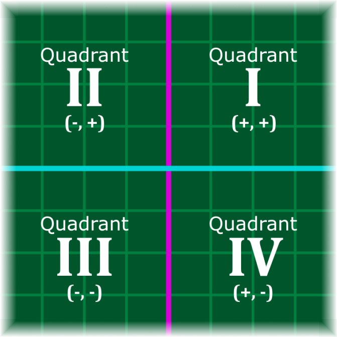

On the Subject of Quadrants
There’s a plane on this bomb! Did I stutter?!
Note: If after first pressing the initiation button, the display shows another number instead of being blank, you are looking at the wrong manual.
A “Quadrants” module has a coordinate plane displayed on the screen, initially featuring a white number; A deactivated stage counter; and four numbered buttons. Press the corresponding button following the table below.
| DISPLAY: | 1 | 3 | 4 | 2 |
|---|---|---|---|---|
| PRESS BUTTON IN: | 2nd Position | 3rd Position | 4th Position | 2nd Position |
This activates the stage counter on the right. Pressing the buttons themselves will no longer do anything of importance. The display should now be “blank”.
Tap the correct quadrant on the touch screen display five times to disarm the module. If the selected quadrant is incorrect, the module will strike and the counter will reset to Stage 1.
One of the symbols represents the x-value of a coordinate on the Cartesian coordinate plane. The other represents the same coordinate’s y-value. The coordinate lies in one of the four quadrants as seen in the diagram on the right. Each quadrant is distinguished by a Roman numeral from 1 to 4.
Under the Roman numerals are the x and y values of any coordinate that’s contained within them, written as (x, y). The x-value of the coordinate is on the left and the y-value is on the right.
Select the quadrant where the given coordinate is located using the rules on the second page.